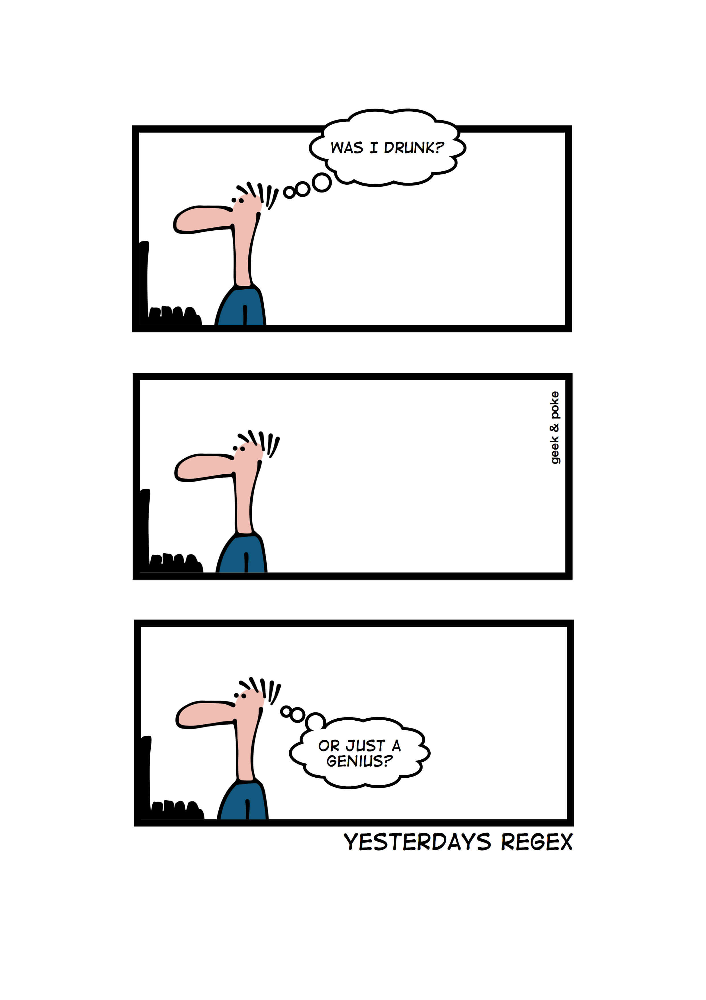
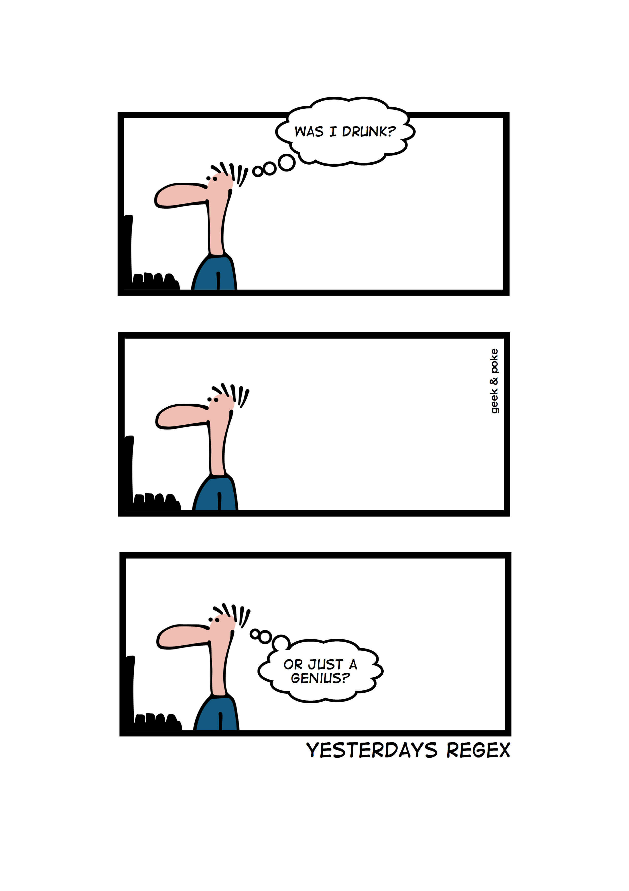
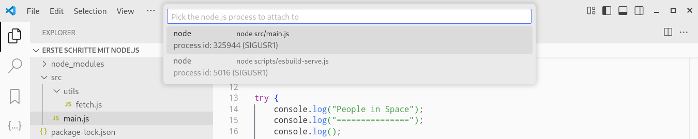
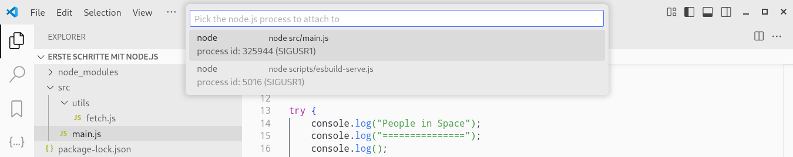

Schritt 1 / 5
Passender Quellcode siehe unten
Passender Quellcode siehe rechts
{.d-block .w-100 .mb-4}
Bisher besteht der Server im Wesentlichen nur aus der Datei main.js,
in der sich fast der gesamte Anwendungscode befindet. Wie wir auf der letzten Seite gesehen
haben, kümmert sich diese um folgende Dinge:
Server konfigurieren und starten
Middleware-Funktionen registrieren
Hello-Anfragen bearbeiten
Logbuch-Anfragen bearbeiten
Hinzu kommen die bereits vorgegebenen Dateien database.js und
utils.js für Datenbankzugriffe und allgemeine Hilfsfunktionen.
Immerhin das Dependency Inversion Principle wird schon eingehalten, weil die
main.js zwar auf anderen beiden zugreift, aber nicht umgekehrt.
In drei einfachen Schritten wollen wir die Code-Struktur nun verbessern. Klicke unten
auf weiter, um die erste Änderung zu sehen.
{.d-block .w-100 .mb-4}
Um eine bessere __Trennung der Verantwortlichkeiten__ zu erhalten, lagern wir die Request
Handler in eine neue Datei controllers/index.js aus, so dass
die main.js nur noch für Start und Konfiguration des Servers
sowie die Registrierung der Middleware-Funktionen zuständig ist:
1. Express-App-Objekt erzeugen
1. Allgemeine Middlewares registrieren
1. Request Handler registrieren (ausgelagert)
1. Error Handling Middleware registrieren
1. Express-App starten
Dies stellt einen guten Kompromiss dar, weil ohne die Middlewares kaum noch Code übrig bliebe,
die Reihenfolge der oben genannten Schritte entscheidend ist und die meisten Weiterentwicklungen
ohnehin bei den Request Handlern zu erwarten sind. Mit Ausnahme der Tatsache, dass der Server
noch keine [CORS](https://developer.mozilla.org/en-US/docs/Web/HTTP/Guides/CORS)-Middleware
besitzt, wird sich die main.js voraussichtlich nicht mehr ändern.
In Express gibt es eigentlich keine „Controller“. Der Begriff taucht aber in vielen anderen
Web Frameworks auf und kennzeichnet dort die Teile, die für die Bearbeitung der HTTP-Anfragen
verantwortlich sind. Dies wird durch den Verzeichnisnamen controllers
hier angedeutet.
Zusätzlich fällt auf, dass die Datei controllers/index.js eine Liste
mit Callback-Funktionen exportiert, die in der main.js der Reihe nach
aufgerufen werden. Dies nimmt teilweise schon die nächste Änderung vorweg, dient hauptsächlich
aber dazu, das __Offen/Geschlossen-Prinzip__ zu realisieren. Die main.js
muss dadurch nicht verändert werden, wenn neue Request Handler hinzugefügt werden sollen.
{.d-block .w-100 .mb-4}
Die letzte Änderung hat zwar die __Trennung der Verantwortlichkeiten__ und auch die Einhaltung
des __Offen/Geschlossen-Prinzips__ verbessert. Ganz am Ende sind wir aber noch nicht. Zwar muss
die main.js bei einer Anpassung der Request Handler nicht mehr verändert
werden. Das Problem wurde aber nur in die Datei controllers/index.js,
die ja immer noch sämtliche Request Handler beinhaltet, verschoben.
In diesem Schritt lagern wie die Request Handler daher in eigene Dateien aus, wodurch sich
folgende Trennung ergibt:
* controllers/hello.controller.js:
Request Handler für „Hallo Welt“
* controllers/logbok.controller.js:
Request Handler für das Logbuch
* controllers/index.js:
Zusammenfassung aller Controller zu einer Liste
Der Webservice kann dadurch viel einfacher um neue Funktionen erweitert werden. Sollen in einer
späteren Version zum Beispiel zusätzlich Außenmissionen verwaltet werden, muss hierfür lediglich
eine neue Controller-Datei angelegt und in die jetzt nur noch sehr kleine controllers/index.js
aufgenommen werden. Die notwendigen Änderungen an bereits vorhandenem Quellcode werden dadurch
auf ein Minimum reduziert.
In den neuen Controller-Dateien sehen wir, dass es nur eine exportierte Funktion mit dem Namen
registerRoutes(app) gibt. Die Dateien erfüllen damit
zusätzlich das __Interface Segregation Principle__, da sie eine möglichst kleine, öffentliche
Schnittstelle besitzen, die leicht zu verstehen und schwer falsch zu verwenden ist. Und da die
Funktion gemäß ihrem Namen nichts anderes macht, außer Request Handler für weitere URL-Routen
zu registrieren, wird auch der __Liskov Substitution__ Genüge getan.
{.d-block .w-100 .mb-4}
Zum Schluss nehmen wir uns noch einmal die __Trennung der Verantwortlichkeiten__ vor und schauen
uns die neuen Controller-Dateien genauer an. Bisher haben wir ja nur den alten Code aus der Datei
main.js hin und her geschoben und anders verpackt. Innerhalb der Request
Handler müssen jedoch zwei Dinge unterschieden werden:
Technisches HTTP-Handling: Alles was mit Express, HTTP-Anfragen, HTTP-Antworten,
JSON-Codierung usw. zu tun hat
Fachliche Logik: Alles nicht-technische, was mit dem eigentlichen Benutzeranliegen
zu tun hat. Ganz unabhängig davon, auf welchem Wege die Anforderung den Server erreicht
(der Server könnte später beispielsweise noch andere Protokolle wie
gRPC unterstützen) und auf welche Art
das Ergebnis zum Client kommt.
Für das „Hallo Welt“ Beispiel lohnt sich der Aufwand nicht. Beim Logbuch-Controller ziehen wir jedoch
die fachliche Logik in eine neue Datei mit dem Pfad
services/logbook.service.js
raus, die somit beispielsweise in mehreren Controllern genutzt werden kann. Die Fachlogik kann dadurch
aber auch einfacher in [Unit Tests](https://de.wikipedia.org/wiki/Modultest){target=_blank} getestet
oder bei einem kompletten Wechsel des Kommunikationsprotokolls beibehalten werden.
Der Begriff „Service“ bezieht sich hier nicht darauf, dass wir einen Webservice programmieren.
Stattdessen haben wir uns hier wieder der Begriffswelt anderer Frameworks bedient, bei denen
Services die Fachlogik einer Anwendung kapseln.
##### Ausblick {.dhbw-lightblue}
Die SOLID-Prinzipien anzuwenden ist nicht immer leicht und es gibt auch kein Geheimrezept hierfür.
Am ehesten können sie als Leitgedanken zur Code-Struktur verstanden werden, über die es sich lohnt,
intensiv nachzudenken. In drei einfachen Schritten konnten wir die Struktur des Fallbeispiels dadurch
wesentlich tragfähiger machen. Der Code ist einfacher zu pflegen und typische Weiterentwicklungen
(insb. das Hinzufügen weiterer Request Handler) können leichter durchgeführt werden, ohne alte Funktionen
kaputt zu machen.
Würde man den Webservice aber tatsächlich um weitere Entitäten wie Außenmissionen, Crew-Mitglieder
etc. erweitern, würde sich schnell ein weiteres Problem bemerkbar machen: __Code-Duplizierung__. Denn
die Controller und Services zur Umsetzung der typischen CRUD-Funktionen (Create, Read, Update und Delete)
würden sehr wahrscheinlich nahezu den gleichen Quellcode minus ganz weniger Unterschiede hinsichtlich
der jeweiigen Entität beinhalten.
Hier könnten objekt-orientierte Designprinzipien wie die [GoF-Entwurfsmuster](https://de.wikipedia.org/wiki/Entwurfsmuster_(Buch))
helfen, um sich wiederholende Code-Abschnitte beispielsweise in eine Basisklasse auszulagern.
Auch hier gilt: Viele Wege führen nach Rom! Und der Vorteil an einer Stelle bedeutet immer einen
Nachteil an einer anderen Stelle. Das ist der Grund, warum gute Software so schwer zu entwerfen ist.
Aber gleichzeitig auch, warum es so lohnenswert ist.
Gib daher niemals auf, nach der besten Lösung zu suchen. Die SOLID-Prinzipien, Entwurfsmuster
und Architekturmuster geben dir hierfür ein Vokabular und erprobte Werkzeuge an die Hand.
Projektverzeichnis /
main.js (ursprüngliche Version)
{.dhbw-fontsize-small .fw-bold}
Dies ist der Quellcode aus den Videos vor Anwendung der SOLID-Prinzipien. Mit Ausnahme der
bereits vorgegebenen Dateien befindet sich der gesamte Code in einer Datei, wobei wir schon
auf der vorherigen Seite gesehen haben, dass hier einige Dinge vermischt werden.
{.mb-0}
import dotenv from "dotenv";
import express from "express";
import logging from "logging";
import path from "node:path";
import process from "node:process";
import {db} from "./database.js";
import {calcStarDate} from "./utils.js";
console.log("Logbuch des Captains");
console.log("====================");
console.log();
// Konfigurationswerte aus den Umgebungsvariablen des Betriebssystems einlesen.
// Alternativ aus der Datei .env, wenn einzelne Variablen im Betriebssystem nicht
// gesetzt sind.
dotenv.config();
const config = {
port: process.env.LBDC_LISTEN_PORT || 9000,
host: process.env.LBDC_LISTEN_HOST || "",
};
// Zentrales App-Objekt der Anwendung. Diesem Objekt sagen wir später, auf welche
// HTTP-Anfragen wir reagieren können wollen und welche Antworten daraufhin an den
// Client zurück geschickt werden.
const app = express();
// Hilfsobjekt für schönere Log-Ausgaben
const logger = logging.default("main");
// Middleware-Funktion, die alle eingehenden HTTP-Anfragen auf der Konsole protokolliert.
app.use((req, res, next) => {
logger.info(`${req.method} ${req.originalUrl}`);
next();
});
// Middleware zum Abruf statischer Dateien aus dem static-Verzeichnis
const staticDir = path.join(import.meta.dirname, "..", "static");
app.use(express.static(staticDir));
// Middleware zum Verarbeiten von JSON-Daten
app.use(express.json());
///////////////////////////////////////////////////////////////////////////////////
// Request Handler Funktion für GET /. Schickt einfach einen Hallo Welt String an
// den Client zurück.
app.get("/api/hello", (req, res) => {
// throw new Error("Das hat leider nicht geklappt. Bitte morgen nochmal versuchen.");
const name = req.query.name || "Express";
res.status(200);
res.send({
"greeting": `Hallo ${name}!`,
"name": name,
});
});
// Request Handler zum Abrufen aller Logbuch-Einträge
app.get("/api/logbook", (req, res) => {
res.status(200); // Okay
res.send(db.data.LogEntries);
});
// Request Handler zum Anlegen eines neuen Logbuch-Eintrags
app.post("/api/logbook", async (req, res) => {
// Prüfen, ob der Client gültige Daten gesendet hat
if (!req.body?.text) {
throw new Error("Bitte einen gültigen Text eingeben!");
}
// Neuen Eintrag im Logbuch speichern
const newEntry = {
starDate: calcStarDate(new Date()),
text: req.body.text,
};
db.data.LogEntries.push(newEntry);
await db.write();
// Den neuen Eintrag an den Client zurück schicken
res.status(201); // Created
res.header("location", `/api/logbook/${result.startdate}`);
res.send(newEntry);
});
///////////////////////////////////////////////////////////////////////////////////
// Error Handling Middleware: Stellt sicher, dass Fehler in einem einheitlichen
// JSON-Format an den Client gesendet werden. Weil Express von Haus aus den Stack
// Trace als Text senden würde.
//
// Gaaaaanz wichtig: Diese Middleware muss ganz zum Schluss nach allen anderen
// Middlewares und v.a. nach den Request Handlern registriert werden. Sonst würde
// sie bei einem Fehler gar nicht ausgeführt werden.
app.use((err, req, res, next) => {
// Fehler auf der Konsole protokollieren
logger.error(err);
console.log(err);
// Fehler an den Client senden
res.status(500); // Internal Server Error
res.send({
"error": {
"type": "TECHNICAL_ERROR",
"message": err.message || "Es ist ein unbekannter Fehler aufgetreten.",
},
});
next();
});
// Server starten
app.listen(config.port, config.host, () => {
logger.info(`Der Server lauscht auf ${config.host}:${config.port}`);
});
Projektverzeichnis /
main.js (angepasst)
{.dhbw-fontsize-small .fw-bold}
Diese Version enhält keine Request Handler mehr. Alles andere wurde beibehalten,
weil Konfiguration und Start des Servers ohnehin nur wenige Zeilen umfassen und
die Middlewares teilweise vor und teilweise nach den Request Handlern registriert
werden müssen. Die angepassten Zeilen sind farblich hervorgehoben.
{.mb-0}
import dotenv from "dotenv";
import express from "express";
import logging from "logging";
import path from "node:path";
import process from "node:process";
import controllers from "./controllers/index.js";
console.log("Logbuch des Captains");
console.log("====================");
console.log();
// Konfigurationswerte aus den Umgebungsvariablen des Betriebssystems einlesen.
// Alternativ aus der Datei .env, wenn einzelne Variablen im Betriebssystem nicht
// gesetzt sind.
dotenv.config();
const config = {
port: process.env.LBDC_LISTEN_PORT || 9000,
host: process.env.LBDC_LISTEN_HOST || "",
};
// Zentrales App-Objekt der Anwendung. Diesem Objekt sagen wir später, auf welche
// HTTP-Anfragen wir reagieren können wollen und welche Antworten daraufhin an den
// Client zurück geschickt werden.
const app = express();
// Hilfsobjekt für schönere Log-Ausgaben
const logger = logging.default("main");
// Middleware-Funktion, die alle eingehenden HTTP-Anfragen auf der Konsole protokolliert.
app.use((req, res, next) => {
logger.info(`${req.method} ${req.originalUrl}`);
next();
});
// Middleware zum Abruf statischer Dateien aus dem static-Verzeichnis
const staticDir = path.join(import.meta.dirname, "..", "static");
app.use(express.static(staticDir));
// Middleware zum Verarbeiten von JSON-Daten
app.use(express.json());
// Request Handler in den Controller-Dateien registrieren
for (let controller of controllers) {
controller(app);
}
// Error Handling Middleware: Stellt sicher, dass Fehler in einem einheitlichen
// JSON-Format an den Client gesendet werden. Weil Express von Haus aus den Stack
// Trace als Text senden würde.
//
// Gaaaaanz wichtig: Diese Middleware muss ganz zum Schluss nach allen anderen
// Middlewares und v.a. nach den Request Handlern registriert werden. Sonst würde
// sie bei einem Fehler gar nicht ausgeführt werden.
app.use((err, req, res, next) => {
// Fehler auf der Konsole protokollieren
logger.error(err);
console.log(err);
// Fehler an den Client senden
res.status(500); // Internal Server Error
res.send({
"error": {
"type": "TECHNICAL_ERROR",
"message": err.message || "Es ist ein unbekannter Fehler aufgetreten.",
},
});
next();
});
// Server starten
app.listen(config.port, config.host, () => {
logger.info(`Der Server lauscht auf ${config.host}:${config.port}`);
});
Projektverzeichnis /
controllers /
index.js (erster Versuch)
{.dhbw-fontsize-small .fw-bold}
Die angepasste Datei main.js importiert von hier ein Array mit Callback-Funktionen,
die zum richtigen Zeitpunkt aufgerufen werden, um die Request Handler des Webservices zu registrieren.
Die Idee dahinter ist, dass die main.js nicht angepasst werden muss, wenn in einer
späteren Version neue Request Handler hinzu kommen, oder alte ausgetauscht werden. Gleichzeitig erlaubt
der Callback-Mechanismus den vollen Zugriff auf das Express-App-Objekt.
{.mb-0}
import {db} from "../database.js";
import {calcStarDate} from "../utils.js";
/**
* HTTP Request Handler für „Hallo Welt“ registrieren
* @param {Express.App} app Express-App Objekt
*/
function helloController(app) {
// Request Handler Funktion für GET /. Schickt einfach einen Hallo Welt String an
// den Client zurück. Hierhin verschoben aus der `main.js`.
app.get("/api/hello", (req, res) => {
// throw new Error("Das hat leider nicht geklappt. Bitte morgen nochmal versuchen.");
const name = req.query.name || "Express";
res.status(200);
res.send({"greeting": `Hallo ${name}!` "name": name});
});
}
/**
* HTTP Request Handler für Logbuch-Einträge registrieren
* @param {Express.App} app Express-App Objekt
*/
function logbookController(app) {
// Request Handler zum Abrufen aller Logbuch-Einträge.
// Hierhin verschoben aus der `main.js`.
app.get("/api/logbook", (req, res) => {
res.status(200); // Okay
res.send(db.data.LogEntries);
});
// Request Handler zum Abrufen aller Logbuch-Einträge.
// Hierhin verschoben aus der `main.js`.
app.post("/api/logbook", async (req, res) => {
// Prüfen, ob der Client gültige Daten gesendet hat
if (!req.body?.text) {
throw new Error("Bitte einen gültigen Text eingeben!");
}
// Neuen Eintrag im Logbuch speichern
const newEntry = {
starDate: calcStarDate(new Date()),
text: req.body.text,
};
db.data.LogEntries.push(newEntry);
await db.write();
// Den neuen Eintrag an den Client zurück schicken
res.status(201); // Created
res.send(newEntry);
});
}
export default [
helloController,
logbookController,
];
Projektverzeichnis /
controllers /
index.js (fertige Version)
{.dhbw-fontsize-small .fw-bold}
Diese stark verkürzte Version lagert die Request Handler in jeweils eigene, Controller genannte,
Code-Dateien aus. Auf diese Weise können neue Controller durch Hinzufügen zwei weiterer Zeilen
ganz einfach hinzugefügt werden, ohne die viel größere Datei main.js
modifizieren zu müssen. Zwar muss auch hier der vorhandene Quellcode verändert werden. Die Datei
ist aber so kompakt, dass man dabei kaum etwas falsch machen kann.
{.mb-0}
import helloController from "./hello.controller.js";
import logbookController from "./logbook.controller.js";
export default [
helloController,
logbookController,
];
Projektverzeichnis /
controllers /
hello.controller.js
{.dhbw-fontsize-small .fw-bold}
Diese Datei zeigt einen einfachen HTTP-Controller, dessen einzige Aufgabe darin besteht,
einen Request Handler für den in den Videos gezeigten „Hallo Welt“ Endpunkt zu registrieren.
Wie man sieht, ist an einem Controller nichts besonderes dran, außer der Funktion
`registerRoutes(app)`, die in der Datei main.js aufgerufen wird.
{.mb-0}
/**
* HTTP Request Handler registrieren
* @param {Express.App} app Express-App Objekt
*/
export default function registerRoutes(app) {
app.get("/api/hello", sayHello);
}
/**
* Begrüßung an den Client senden. Über den URL-Parameter "name" kann der Client
* optional einen zu grüßenden Namen übergeben.
*/
export function sayHello(req, res) {
const name = req.query.name || "Express";
res.status(200);
res.send({"greeting": `Hallo ${name}!`, "name": name});
}
Projektverzeichnis /
controllers /
logbook.controller.js (erste Version)
{.dhbw-fontsize-small .fw-bold}
Diese Datei stellt einen HTTP-Controller für Logbuch-Einträge zur Verfügung,
indem die entsprechenden Request Handler in der Express-App registriert werden.
{.mb-0}
import {db} from "../database.js";
import {calcStarDate} from "../utils.js";
/**
* HTTP Request Handler registrieren
* @param {Express.App} app Express-App Objekt
*/
export default function registerRoutes(app) {
app.get("/api/logbook", search);
app.post("/api/logbook", create);
// HINWEIS: Echte REST-Webservices haben noch mehr Endpunkte
}
/**
* Logbuch-Einträge suchen
*/
async function search(req, res) {
res.status(200); // Okay
res.send(db.data.LogEntries);
}
/**
* Neuen Logbuch-Eintrag schreiben
*/
async function create(req, res) {
// Prüfen, ob der Client gültige Daten gesendet hat
if (!req.body?.text) {
throw new Error("Bitte einen gültigen Text eingeben!");
}
// Neuen Eintrag im Logbuch speichern
const newEntry = {
starDate: calcStarDate(new Date()),
text: req.body.text,
};
db.data.LogEntries.push(newEntry);
await db.write();
// Den neuen Eintrag an den Client zurück schicken
res.status(201); // Created
res.header("location", `/api/logbook/${result.startdate}`);
res.send(newEntry);
}
Projektverzeichnis /
controllers /
logbook.controller.js (nur HTTP-Handling)
{.dhbw-fontsize-small .fw-bold}
Diese Datei stellt einen HTTP-Controller für Logbuch-Einträge zur Verfügung,
indem die entsprechenden Request Handler in der Express-App registriert werden.
{.mb-0}
Es handelt sich hierbei lediglich um die technische Ebene, auf der HTTP-Anfragen
empfangen und beantwortet werden. Die davon unabhängige Fachlogik befindet sich in
einer getrennten Service-Datei.
import {searchLogEntries} from "../services/logbook.service.js";
import {saveNewLogEntry} from "../services/logbook.service.js";
/**
* HTTP Request Handler registrieren
* @param {Express.App} app Express-App Objekt
*/
export default function registerRoutes(app) {
app.get("/api/logbook", search);
app.post("/api/logbook", create);
// HINWEIS: Echte REST-Webservices haben noch mehr Endpunkte
}
/**
* Logbuch-Einträge suchen
*/
async function search(req, res) {
// Neue Funktion für die fachliche Logik
let result = await searchLogEntries(req.query.q);
res.status(200); // Okay
res.send(result);
}
/**
* Neuen Logbuch-Eintrag schreiben
*/
async function create(req, res) {
// Neue Funktion für die fachliche Logik
let result = await saveNewLogEntry(req.body);
res.status(201); // Created
res.header("location", `/api/logbook/${result.startdate}`);
res.send(result);
}
Projektverzeichnis /
services /
logbook.service.js (fertige Version)
{.dhbw-fontsize-small .fw-bold}
Diese Datei beinhaltet die fachliche Anwendungslogik zur Verwaltung von Logbuch-Einträgen.
Hier werden Einträge aus der Datenbank gelesen oder dort abgespeichert. Es finden sich
aber keine Spuren von Express oder dem darauf aufbauenden REST-Webservice, um die
Wiederverwendbarkeit der Datei sicherzustellen.
{.mb-0}
import {db} from "../database.js";
import {calcStarDate} from "../utils.js";
/**
* Business Logik zum Suchen von Logbuch-Einträgen.
* @param {String} query Suchbegriff
* @returns {Array} Gefundene Eintröge
*/
export async function searchLogEntries(query) {
let result = [];
for (let logEntry of db.data.LogEntries) {
if (!query || logEntry.text?.includes(query)) {
result.push(logEntry);
}
}
return result;
}
/**
* Neuen Eintrag im Logbuch speichern.
* @param {Object} entry Zu speicherender Eintrag
* @returns {Object} Gespeicherter Eintrag
* @throws {Error} Fehlende oder ungültige Daten
*/
export async function saveNewLogEntry(entry) {
// Übergebenen Datensatz auf Plausibilität prüfen
if (!entry?.text) {
throw new Error("Bitte einen gültigen Text eingeben!");
}
// Neuen Eintrag im Logbuch speichern
const newEntry = {
starDate: calcStarDate(new Date()),
text: entry.text,
};
db.data.LogEntries.push(newEntry);
await db.write();
// Gespeicherten Eintrag zurückgeben
return newEntry;
}
Projektverzeichnis /
database.js
{.dhbw-fontsize-small .fw-bold}
Diese Datei ermöglicht den höheren Schichten den direkten Zugriff auf eine Datenbank,
in der die Daten des Webservices gespeichert werden. Normalerweise würde man hier eine
Verbindung zu einer echten Datenbank wie [MariaDB](https://mariadb.org/){target=_blank},
[Postgres](https://www.postgresql.org/){target=_blank} oder [MongoDB](https://www.mongodb.com/){target=_blank}
herstellen. Um aber keinen Datenbank-Server einrichten zu müssen, weichen wir hier auf
das Paket [lowdb](https://www.npmjs.com/package/lowdb){target=_blank} aus.
{.mb-0}
import {JSONFilePreset} from "lowdb/node";
// Default-Daten für unsere kleine Datenbank
const defaultData = {
LogEntries: [
{
"starDate": "49762.3",
"text": "Die Crew hat erfolgreich eine neue Klasse-M-Welt kartografiert."
},
{
"starDate": "49812.7",
"text": "Ein unbekanntes Signal aus dem Delta-Quadranten erreicht uns."
},
// Weitere Beispiel-Datensätze …
],
};
// Datenbank-Objekt als Singleton
export const db = await JSONFilePreset("db.json", defaultData);
Projektverzeichnis /
utils.js
{.dhbw-fontsize-small .fw-bold}
Diese Datei beinhaltet allgemeine Hilfsfunktionen, die an allen Stellen innerhalb des
Quellcodes verwendet werden können. Denkbar wäre auch, eine eigene solche Datei in
jedem Unterverzeichnis anzulegen oder gar ein eigenes Verzeichnis daraus zu machen.
Hier genügt aber eine einzelne Datei, da sie aktuell ohnehin nur eine Funktion besitzt.
{.mb-0}
/**
* Hilfsfunktion zur Berechnung der aus Star Trek bekannten Sternzeit zu einem gegebenen
* Datum mit Uhrzeit.
*
* @param {Date} date Umzurechnendes Datum und Uhrzeit
* @returns {string} Sternzeit
*/
export function calcStarDate(date) {
const startYear = 1973;
const year = date.getFullYear();
const firstDay = new Date(year, 0, 0);
const diff = date - firstDay;
const oneDay = 1000 * 60 * 60 * 24;
const dayOfYear = Math.floor(diff / oneDay);
const timeOfDay = dayOfYear + (date.getHours() / 24)
+ (date.getMinutes() / 1440)
+ (date.getSeconds() / 86400);
const starDate = 1000 * (year - startYear) + timeOfDay;
return `${starDate.toFixed(2)}`;
}


 ¹
Dümmste*r anzunehmender User*in 😲
¹
Dümmste*r anzunehmender User*in 😲


 


 



 Bildnachweis:
Bildnachweis: